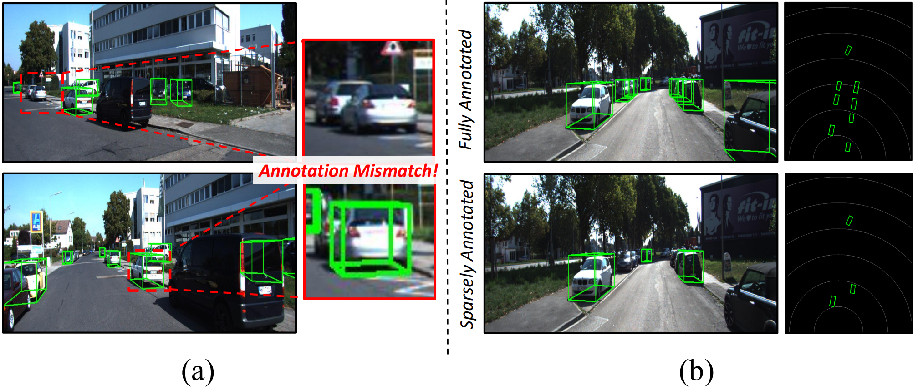
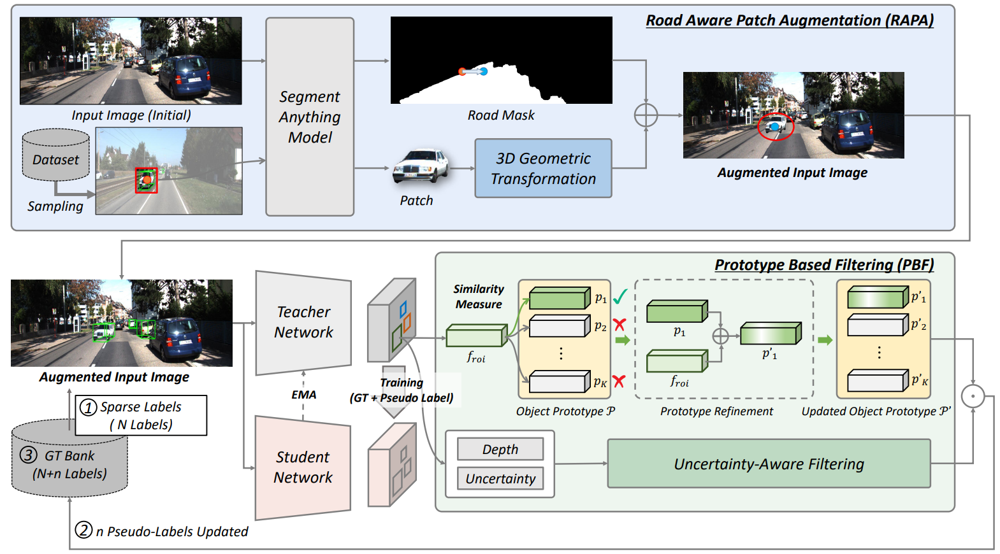
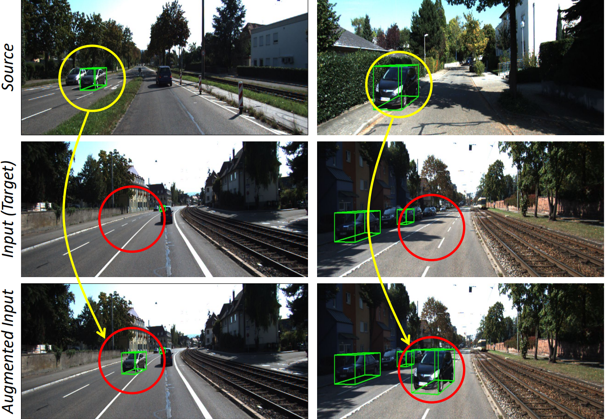
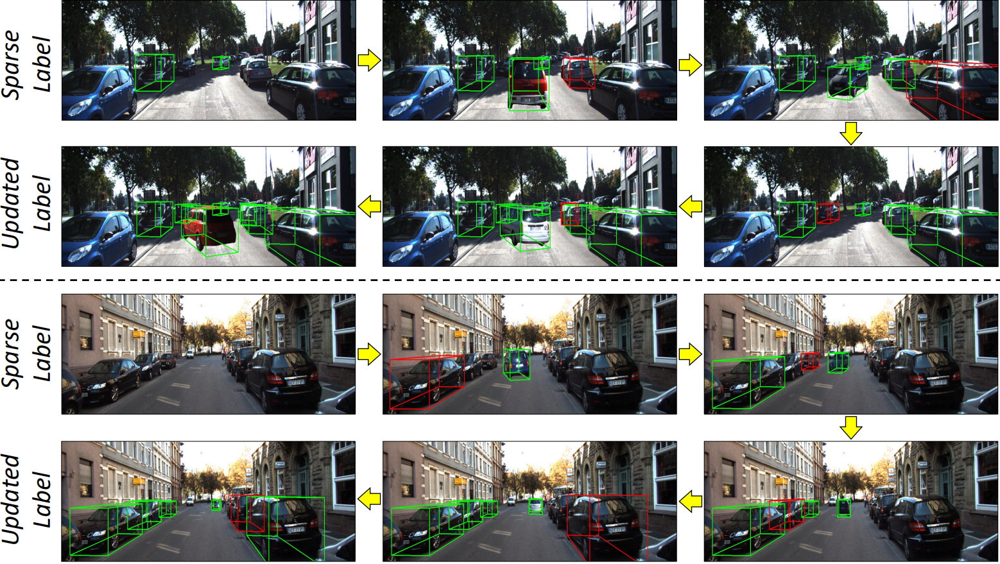
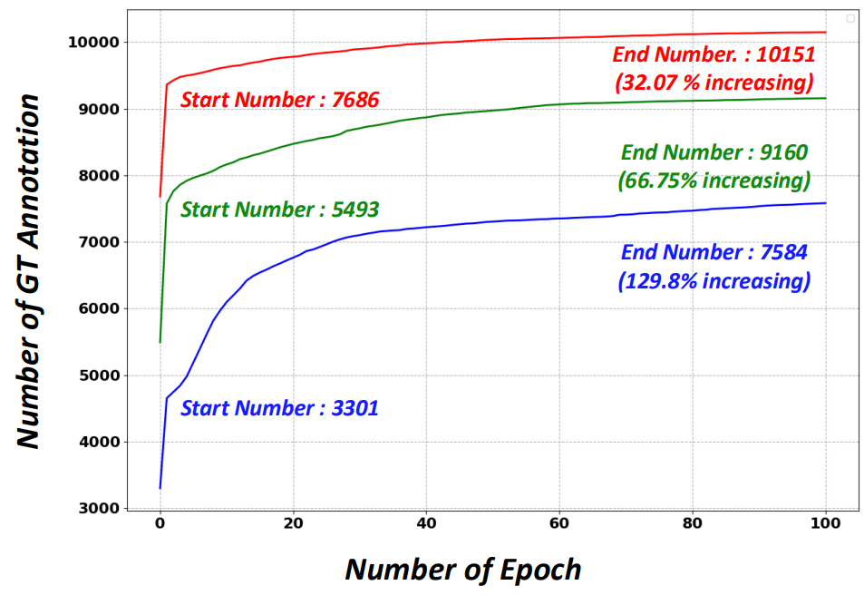
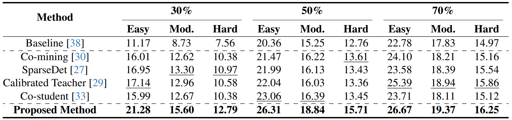
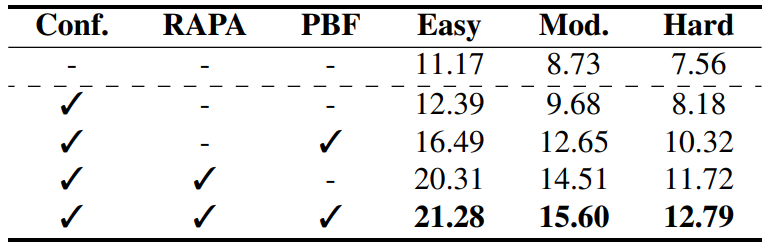

Abstract
Monocular 3D object detection has achieved impressive performance on densely annotated datasets. However, it struggles when only a fraction of objects are labeled due to the high cost of 3D annotation. This sparsely annotated setting is common in real-world scenarios where annotating every object is impractical. To address this, we propose a novel framework for sparsely annotated monocular 3D object detection with two key modules. First, we propose Road-Aware Patch Augmentation (RAPA), which leverages sparse annotations by augmenting segmented object patches onto road regions while preserving 3D geometric consistency. Second, we propose Prototype-Based Filtering (PBF), which generates high-quality pseudo-labels by filtering predictions through prototype similarity and depth uncertainty. It maintains global 2D RoI feature prototypes and selects pseudo-labels that are both feature-consistent with learned prototypes and have reliable depth estimates. Our training strategy combines geometry-preserving augmentation with prototype-guided pseudo-labeling to achieve robust detection under sparse supervision. Extensive experiments demonstrate the effectiveness of the proposed method.
Motivation
Monocular 3D object detection is attractive for real-world perception because it only requires a single camera, but training accurate detectors still depends on dense 3D annotations. These annotations are costly because each object requires depth, dimension, and orientation labels. In practice, many visible objects are left unlabeled, creating a sparsely annotated setting with inconsistent supervision.
This problem is more difficult than standard sparsely annotated 2D detection. In monocular 3D detection, high classification confidence does not necessarily indicate accurate 3D geometry; a prediction may look reliable in 2D while having large depth or orientation errors. Therefore, simply applying existing SAOD methods or confidence-based pseudo-labeling can introduce noisy 3D supervision.

Method
MonoSAOD is built on a teacher-student framework designed for sparsely annotated monocular 3D object detection. Given sparse 3D labels, the framework first enriches the training data using Road-Aware Patch Augmentation (RAPA), which places clean object patches onto plausible road regions while preserving 3D geometric consistency.
To further reduce the effect of missing annotations, Prototype-Based Filtering (PBF) selects reliable pseudo-labels from teacher predictions. Instead of relying only on classification confidence, PBF jointly considers semantic feature consistency through object prototypes and geometric reliability through depth uncertainty. The selected pseudo-labels are accumulated into a GT Bank and used as additional supervision for training the student network.

Overall architecture
Results





BibTeX
@article{jung2026monosaod,
title={MonoSAOD: Monocular 3D Object Detection with Sparsely Annotated Label},
author={Jung, Junyoung and Kim, Seokwon and Kim, Jun Uk},
journal={arXiv preprint arXiv:2604.01646},
year={2026}
}